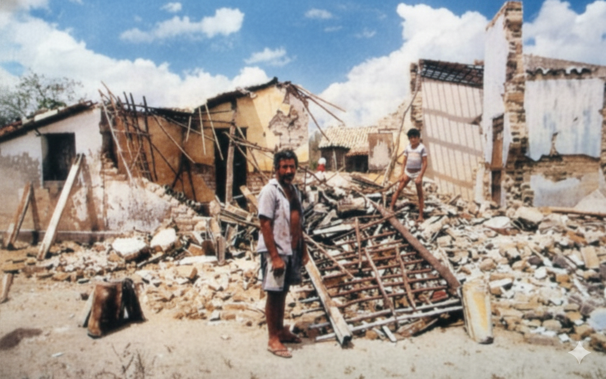

Abalos Sísmicos em João Câmara (1986)
Um dos maiores eventos sísmicos já registrados no Nordeste brasileiro
Em 1986, a cidade de João Câmara, no Rio Grande do Norte, foi palco de uma série de abalos sísmicos que marcaram a história da sismologia no Brasil. Esses tremores causaram medo na população, danos estruturais e despertaram o interesse de pesquisadores nacionais e internacionais.

Por que os Abalos de João Câmara São Importantes
Entre agosto e dezembro de 1986, João Câmara registrou mais de mil abalos sísmicos. O mais intenso ocorreu em 30 de novembro, com magnitude aproximada de 5,1, sendo um dos maiores já registrados no Brasil. Cerca de 400 casas foram destruídas ou severamente danificadas, afetando aproximadamente 15 mil pessoas. Apesar dos danos materiais e do pânico gerado, não houve registro oficial de vítimas fatais. Os abalos sísmicos de 1986 transformaram João Câmara em um importante centro de estudos geológicos no Brasil. A sequência de tremores, classificada como um enxame sísmico, permitiu que pesquisadores acompanhassem em tempo real a evolução da atividade sísmica em uma região localizada no interior de uma placa tectônica. Esse tipo de ocorrência é raro e de grande interesse científico.
Casas destruidas
Eventos sismicos
Maior magnitude
Pessoas afetadas
Mortes
Por que estudar os abalos sísmicos de João Câmara?
Os abalos sísmicos ocorridos em João Câmara em 1986 representam um dos eventos geológicos mais importantes da história do Brasil. Estudar esse fenômeno permite compreender como ocorrem os terremotos em regiões intraplaca, além de relacionar conceitos da Geografia e da Física vistos no Ensino Médio.
Importância Científica
Os abalos de 1986 transformaram João Câmara em um laboratório natural para estudos sismológicos, contribuindo para pesquisas sobre terremotos intraplaca no Brasil.
Aprendizado Escolar
O evento permite a aplicação prática de conteúdos do Ensino Médio, como estrutura interna da Terra, ondas sísmicas, energia e falhas geológicas.
Impactos Sociais
Os tremores causaram danos materiais, medo na população e mudanças no cotidiano da cidade, tornando-se um marco histórico para João Câmara.
Projeto Integrador
Disciplinas Envolvidas

Geografia
Analisa as falhas geológicas e a relação dos abalos com o espaço geográfico.

Física
Estuda as ondas sísmicas e a propagação da energia responsável pelos tremores.

Informática
Responsável pela criação do site e pela divulgação do conteúdo científico.